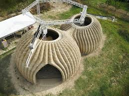

3D Printing Technology Revolutionizes Housing Construction
A breakthrough in 3D printing technology has made it possible to construct affordable housing in just 24 hours. The new system, developed by Advanced Construction Technologies, uses locally sourced materials and can reduce construction costs by up to 40% while minimizing waste. The technology has been successfully deployed in post-disaster recovery efforts in Southeast Asia.
Source: Engineering News Record